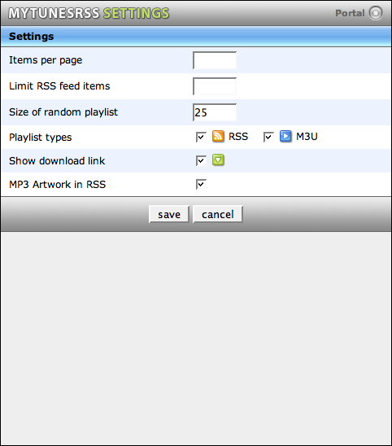

Settings
The settings are stored in a cookie in the browser. This makes it easy to configure different clients. You can for example set the number of items per page to a relatively small value on something like the Playstation Portable, but to a larger number of a PC with its larger display. The same way you can choose to display only RSS feed icons on a Playstation Portable where M3U playlists are not supported.
The number of items per page is taken into accout in the playlist manager, the portal, the artist and album browser and the track list.
You can limit the maximum number of item in an RSS feed. The Playstation Portable for example displays the first 100 items of a feed only. So limiting feeds to 100 items is useful here. A limit will make the portal display each playlist which is larger than this number as multiple splitted lists in addition to the original list.
You can choose the number of items for the random tracks playlist. The chosen number is displayed in the playlist name on the portal page.
The next option is the playlist type choice. You can select to have only the RSS icons, only the M3U icons or both. This makes sense if a client only supports one of them or you are only working with one of them. You can also select to either show or hide the download link. If only a few of your tracks contain valid artwork, finding the first one can take some time for large playlists, so you can choose to turn of the usage of MP3 artwork for RSS feeds here.
